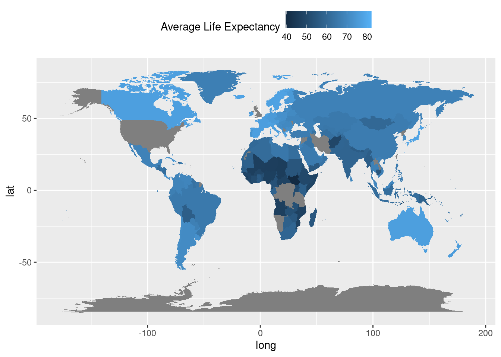
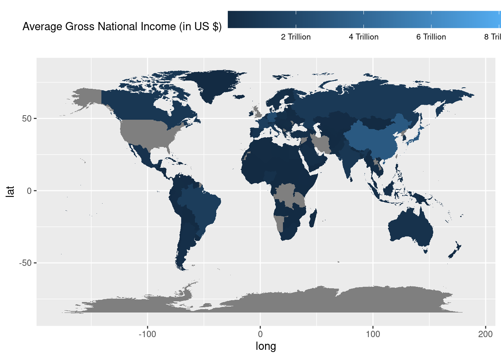
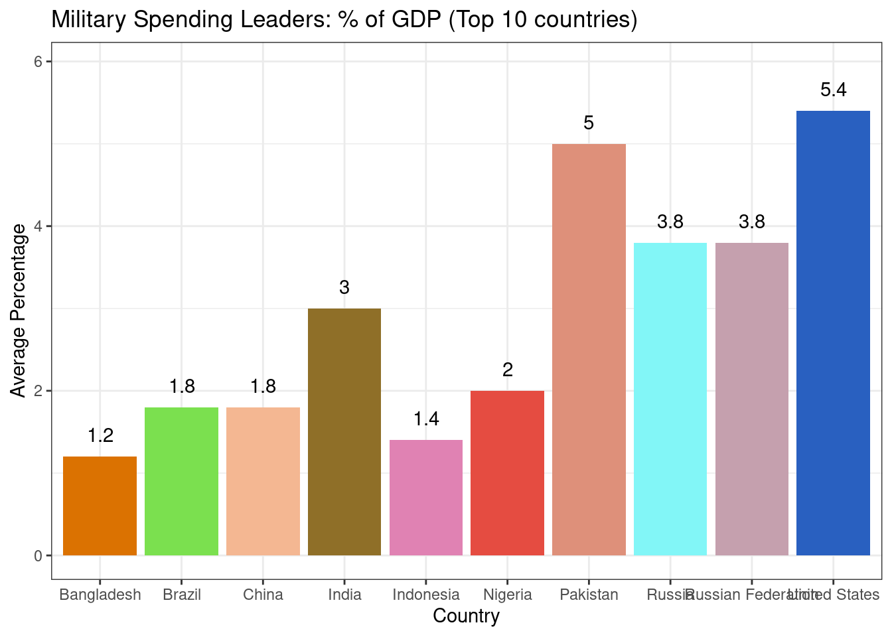

Welcome to the World Indicators Overview section of the Quarto Report. In this segment, we delve into key global metrics and trends, shedding light on crucial aspects such as life expectancy, economic prosperity, population dynamics, and military expenditure. Through visual representations and insightful analysis, we aim to provide a comprehensive understanding of these vital indicators, offering valuable perspectives on the state of our world today.
World Life Expectancy Overview
Description:
This map provides a comprehensive overview of life expectancy across the world, ranging from an average of 40 to 80 years. Using a color gradient, regions are shaded from light blue to dark blue, with lighter shades indicating higher life expectancies and darker shades indicating lower ones.
Noteworthy Outliers:
Cayman Islands (North America): 82.19 years
Liechtenstein (Europe): 80.80 years
Faroe Islands (Europe): 79.02 years
These regions are depicted in the lightest shade of blue, signifying their exceptional longevity rates.
Lowest Life Expectancies:
South Sudan (Africa): 39.59 years
Chad (Africa): 46.02 years
Niger (Africa): 46.43 years
These countries are represented in the darkest shade of blue, underscoring the challenges they face in healthcare and socio-economic development.
This visual representation serves as a poignant reminder of the global disparities in health outcomes and underscores the importance of targeted interventions to improve life expectancy and overall well-being worldwide.
# TASK 1: Average of Life ExpectancyAvg_LE <- data_filtered %>%group_by(country) %>%summarize(Avg_LE =mean(LifeExp, na.rm =TRUE))Avg_LE <-na.omit(Avg_LE)# Import World Map coordinatesmap_world <-map_data("world")colnames(map_world)[colnames(map_world) =='region'] <-'country'# New Map Datasetmap_data_join <-full_join(Avg_LE, map_world)
Joining with `by = join_by(country)`
# Plot the map with legend at the topggplot(map_data_join) +aes(x = long, y = lat, group = group, fill = Avg_LE) +geom_polygon() +labs(fill ="Average Life Expectancy") +theme(legend.position ="top")

World Average Gross National Income (GNI) Map
Description:
This map visualizes the average Gross National Income (GNI) in USD across the globe, with lighter shades of blue indicating higher GNI values and darker shades representing lower ones. The top three countries with the highest GNI are:
United States (North America) - $8.297609 trillion
China (Asia) - $3.065042 trillion
Japan (Asia) - $2.978375 trillion
Additionally, the map highlights the top three countries with the lowest GNI:
Tuvalu (Oceania) - $54,944,850
American Samoa (Oceania) - $116,138,462
Nauru (Oceania) - $146,585,017
Each country is labeled with its respective continent name for easy reference in understanding the geographical distribution of GNI levels worldwide.
This visual representation offers insights into the economic disparities among nations across different continents, reflecting the global landscape of wealth distribution.
# TASK 2: Average Gross Net Incomecolnames(data_filtered)[colnames(data_filtered) =='GNI (current US$)'] <-'GNI'Avg_GNI <- data_filtered %>%group_by(country) %>%summarize(Avg_GNI =mean(GNI, na.rm =TRUE))Avg_GNI <-na.omit(Avg_GNI)# New Map Datasetmap_GNI <-full_join(Avg_GNI, map_world)
Joining with `by = join_by(country)`
# Plot the map with adjusted legendggplot(map_GNI) +aes(x = long, y = lat, group = group, fill = Avg_GNI) +geom_polygon() +labs(fill ="Average Gross National Income (in US $)") +scale_fill_continuous(label =function(x) {paste(round(x /1e12), "Trillion", sep =" ") }) +theme(legend.position ="top",legend.key.width =unit(2, "cm"), # Adjust legend key widthlegend.text =element_text(size =8)) # Adjust legend text size

Time Series Map of Population Growth
Description:
The time series map illustrates the population growth trends of several countries from 1960 to 2022. Each country’s population increase is represented as a percentage, showcasing the demographic changes over the decades.
Countries and Continents (sorted by population in 2022):
This visualization provides insights into the population dynamics across continents, highlighting significant growth patterns over the studied period.
# TASK 3: Total Population for Each Countrycolnames(data_filtered)[colnames(data_filtered) =='Population, total'] <-'Population'country_population <- data_filtered %>%group_by(country) %>%summarize(Total_Population =sum(Population, na.rm =TRUE)) %>%arrange(desc(Total_Population)) %>%top_n(10)
Selecting by Total_Population
# Filter the original data to include only the top 10 countriesdata_filtered_top10 <- data_filtered %>%filter(country %in% country_population$country)# Create separate Dataframe for GraphCP <- data_filtered_top10[c('country', 'year', 'Population')]# Create the time series plottimeseries_plot <- CP %>%na.omit() %>%ggplot() +aes(year, Population, group = country, colour = country) +geom_line() +scale_y_continuous(labels =function(x) paste(round(x /1e6), "M", sep ="")) +labs(x ="Year", y ="Population", title ="Decades of Demography: Top 10 countires by population from 1960 to 2022")ggplotly(timeseries_plot)
Bar Graph of Average Military Expenditure as Percentage of GDP
Description:
The bar graph illustrates the average percentage of GDP allocated to military expenses by various countries from 1960 to 2022. Highlighting the top spenders, the data provides insights into the relative prioritization of military spending among different nations over the decades.
Top 5 Countries:
United States (North America): With an average military expenditure of 5.37% of GDP, the United States leads in defense spending, reflecting its commitment to maintaining global security leadership.
Pakistan (Asia): Pakistan ranks second with an average military expenditure of 4.98% of GDP, highlighting its focus on safeguarding national security interests amidst geopolitical challenges.
Russia/Russian Federation (Europe/Asia): Both Russia and the Russian Federation allocate an average of 3.79% of GDP to military expenditures, underscoring their historical role as major military powers.
India (Asia): India’s average military expenditure of 3.02% of GDP reflects its efforts to modernize its armed forces and address regional security concerns.
Nigeria (Africa): Nigeria’s allocation of 1.96% of GDP to military spending emphasizes its commitment to national defense amidst internal and regional security challenges.
These top 5 countries demonstrate diverse geopolitical contexts and strategic priorities, yet they all prioritize national defense and security through substantial military expenditures.
# TASK 4: Average of Military Expenditurescolnames(Meta_Data)[colnames(Meta_Data) =='Military expenditure (% of GDP)'] <-'ME'Avg_ME <- Meta_Data %>%group_by(country) %>%summarize(Avg_MEI =round(mean(ME, na.rm =TRUE), digits =1))# Top 10 countries with highest Military ExpendituresAvg_ME_10 <- Avg_ME %>%filter(country %in% country_population$country)# Plot bar Graphggplot(Avg_ME_10, aes(x = country, y = Avg_MEI)) +geom_bar(stat ="identity", fill =rgb(runif(n =nrow(Avg_ME_10), min =0, max =255) /255,runif(n =nrow(Avg_ME_10), min =0, max =255) /255,runif(n =nrow(Avg_ME_10), min =0, max =255) /255)) +geom_text(aes(label = Avg_MEI, vjust =-1, hjust =0.5)) +labs(title ="Military Spending Leaders: % of GDP (Top 10 countries)",x ="Country",y ="Average Percentage") +theme_classic() +theme_bw() +coord_cartesian(ylim =c(0, max(Avg_ME_10$Avg_MEI) *1.1)) # Adjust the multiplier as needed

Conclusion:
As we conclude this overview of world indicators, it becomes evident that our planet is characterized by a diverse array of realities and challenges. From disparities in life expectancy and economic prosperity to the complexities of population growth and military expenditure, each facet of global development presents unique opportunities and obstacles. By harnessing the insights gleaned from these visual representations, we can strive towards a more informed and equitable future, where targeted interventions and collaborative efforts address the pressing issues facing humanity. Together, let us continue to explore, understand, and act upon the dynamics shaping our world for the betterment of all.